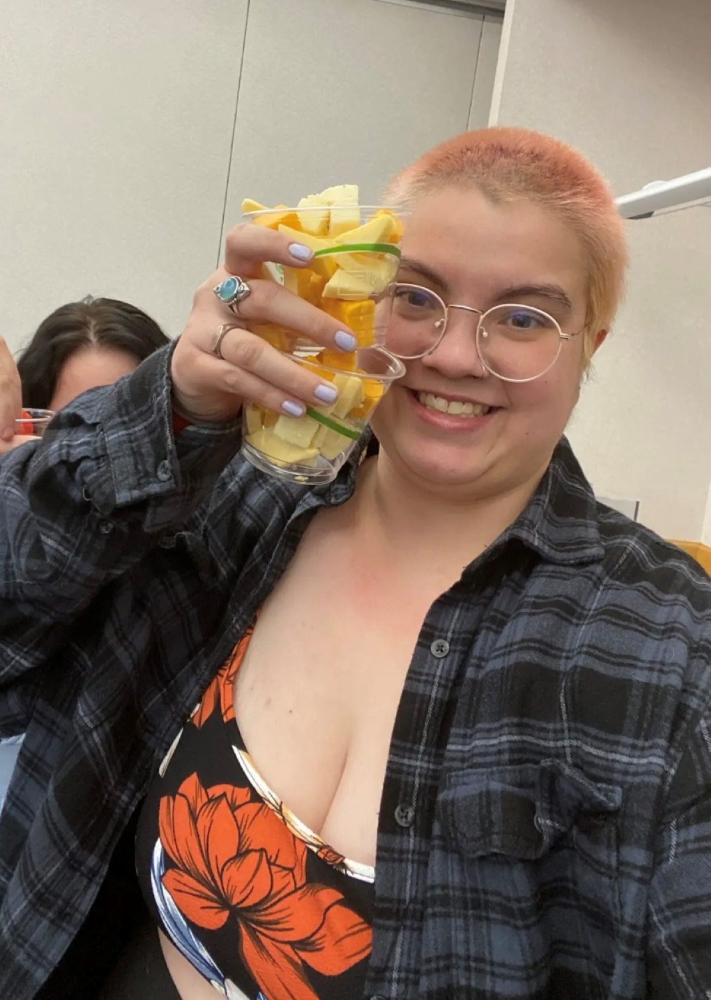

Artist Statement
This exhibition represents my current journey through digital art and design, coming from a background outside of traditional art. As someone aiming to work in biomedical design, my focus is usually on coding and technical skills rather than artistic expression.
The works shown here are a mix of assignments and experiments in web design and digital illustration, reflecting my process of learning new tools and techniques. The theme of chaos reflects not only the variety of media and styles, but also my experience of stepping into an unfamiliar field without a clear artistic direction.
This collection embraces the uncertainty and challenges of learning to think visually while coming from a technical background.
